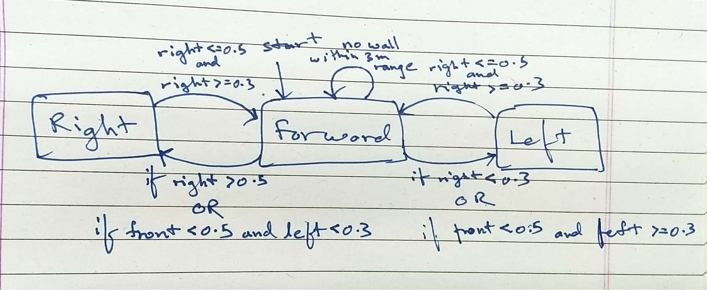

TL;DR
Must See on this page: Design Lab 02 (Controlling Robots)
Unit 1: Software Engineering
Notes:
Lecture 1 OOP
Lecture Handout:
Readings
Read chapters 1-3 of the course notes.
My Notes
Humans deal with complexity by exploiting the power of abstraction and modularity
Modularity is the idea of building components that can be re-used; and abstraction is the idea that after constructing a module (be it software or circuits or gears), most of the details of the module construction can be ignored and a simpler description used for module interaction.
Lack of modularity makes it very difficult to design large systems, because two different people, or the same person at two different times, cannot design pieces and put them together without understanding the whole.
the key point is that good modules preserve abstraction barriers between the use of a module and internal details of how they are constructed
Think of a transducer as a processing box that runs continuously.
In the context of our PCAP framework, object-oriented programming will give us methods for capturing common patterns in data and the procedures that operate on that data, via classes, generic functions, and inheritance.

Design Lab 01
Lecture 2 State Machines
Lecture Handout
Reading
Read chapter 4.1 of the course notes.
My Notes
State machines are a method of modeling systems whose output depends on the entire history of their inputs, and not just on the most recent input.
State machine models can either be continuous time or discrete time.
we can think of the job of an embedded system as performing a transduction from a stream (infinite sequence) of input values to a stream of output values
Primitive state machines We can specify a transducer (a process that takes as input a sequence of values which serve as inputs to the state machine, and returns as output the set of outputs of the machine for each input) as a state machine (SM) by specifying:
set of states, S,
a set of inputs, I, also called the input vocabulary,
a set of outputs, O, also called the output vocabulary,
a next-state function, \(n(i_s, s_t) \mapsto s_{t+1}\), that maps the input at time t and the state at time t to the state at time t + 1,
an output function, \(o(i_s, s_t) \mapsto o_t\), that maps the input at time t and the state at time t to the output at time t; and
an initial state, s0, which is the state at time 0.
It is important to note that getNextValues does not change the state of the machine, in other words, it does not mutate a state variable. Its job is to be a pure function:
Software Lab 02
Design Lab 02 (Controlling Robots)
State Transition Diagram

Tutorial

MazeWorld

Source Code
- class MySMClass[source]
- startState = 1
- getNextValues(state, inp)[source]
Calculates the next values based on the current state and input.
- Parameters:
state (State) – The current state of the robot.
inp (Input) – The input received from the robot’s sensors.
- Returns:
A tuple containing the next state and the action to perform.
- Return type:
Tuple[State, io.Action]
- Algorithm:
The ‘State’ enumeration represents the robot’s state (forward, left, right).
The ‘io.Action’ class defines the action to be performed (fvel: forward velocity, rvel: rotational velocity).
The method uses the distances (inp.sonars) detected by the sonar sensors to make decisions.
The front_dist, right_dist, and left_dist are calculated as the minimum distances from the corresponding sensors.
- The robot’s behavior is determined based on the sensor readings:
If there are no walls within a 3m range, the robot keeps going forwards.
- If the front distance is less than 0.5, the robot stops and rotates right or left based on the left-side sensor readings (min(inp.sonars[0:3])).
If there is wall close to left side, then turns right else there is space on left to turn left.
If there is a wall on the right side farther than 0.5, the robot moves right.
If there is a wall on the right side within 0.5 and 0.3, the robot moves forward.
If there is a wall on the right side less than 0.3 away, the robot moves left.
Homework 01
- class BinaryOp(left, right)[source]
- lazy_eval(env)[source]
Evaluate the lazy expression in the given environment. if any of right or left doesn’t evaluate into a Number then it’s simply still Binary Operation eval(self.opStr)(left_val, right_val) is equivalent to Sum(left_val, right_val) if opStr is ‘Sum’
- Parameters:
env (dict) – The environment in which to evaluate the expression.
- Returns:
The result of evaluating the lazy expression.
- Return type:
int or float or str
- class Assign(left, right)[source]
- opStr = 'Assign'
- eval(env, lazy=True)[source]
Evaluate the expression.
- Parameters:
env (dict) – The environment in which the expression is evaluated.
lazy (bool, optional) – If lazy evaluation should be performed. Defaults to LAZY.
- Returns:
None
- lazy_eval(env)[source]
Assigns the value of self.right to the variable self.left.name in the given environment env. Does not evaluate the right hand side; simply assign the value of the variable in the environment (self.left.name) to be the unevaluated syntax tree (self.right).
- Parameters:
env (dict) – The environment in which the assignment will be made.
- Returns:
None
- class Variable(name)[source]
- eval(env, lazy=True)[source]
Evaluates the expression in the given environment.
- Parameters:
env (dict) – The environment in which the expression is evaluated.
lazy (bool, optional) – Whether to lazily evaluate the expression. Defaults to LAZY.
- Returns:
The evaluated value of the expression.
- lazy_eval(env)[source]
Evaluates a lazy expression based on the given environment. 1. If there is no variable in the environment already, simply returns an instance of Variable with the name of the variable 2. Otherwise, returns the value of the variable from the environment if the variable is a number 3. Otherwise, returns the syntax tree for the expression
- Parameters:
env (dict) – The environment containing variable-value mappings.
- Returns:
The evaluated expression.
- Return type:
Variable or Num
- tokenize(string)[source]
Tokenizes a given string into a list of tokens. For each charecter in the string, it checks if it is a space or sperator ((, ), +, -, *, /, =) Need to check for spaces for cases like ‘hi 33 777’
If the character is a separator or space, the function adds the substring that starts from the start index and ends just before the current index (end) to the tokens list. This extracted substring is stripped of any leading or trailing spaces to ensure clean tokens. Additionally, the current character is added as a separate token to the tokens list.
The start index is then updated to the position after the last separator or space.
At the end of the loop, if the start index is not equal to the end index, it means there is a final token to be added to the tokens list. Only happnes when the last token is not followed by a separator. Eg. tokenize(‘fred+george’)
- Parameters:
string (str) – The string to be tokenized.
- Returns:
A list of tokens extracted from the input string.
- Return type:
list
- parse(tokens)[source]
Parses a list of tokens and returns the parsed expression.
Parameters: - tokens (list): A list of tokens representing an arithmetic expression.
Returns: - parsedExp: The parsed expression.
Example: parse([‘(’, ‘+’, ‘2’, ‘3’, ‘)’]) returns Sum(Number(2), Number(3))
- testExprs = ['(2 + 5)', '(z = 6)', 'z', '(w = (z + 1))', 'w']
Answers are: Sum(Var(b), Var(c)) Sum(2.0, Var(c)) 6.0